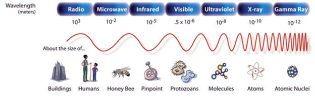
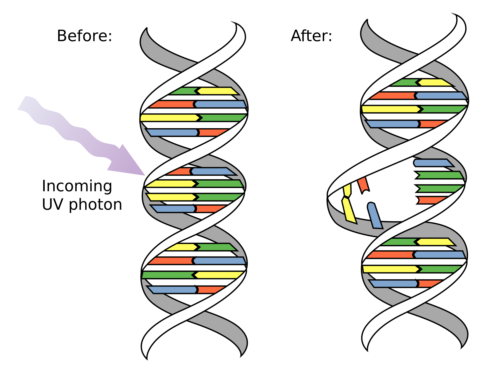

Radiation. Invisible stuff. Scary enough to manipulate nations, but convenient enough to ignore for that perfect suntan – what is radiation exactly, and how does it age, mutate, or potentially kill us?
First, let's break down some definitions. We use radiation as an umbrella term to cover a lot of things, from acoustic radiation – sound – like ultrasound, which can only travel through objects, to electromagnetic radiation – light – which can travel through objects and empty space. Electromagnetic radiation, the focus of our discussion here, includes the radiation we generate in nuclear power plants, the radiation we associate with nuclear war, and the radiation we use for cancer treatments, x-rays, etc. It is also the radiation we interact with every day when we use our microwaves, turn on the radio, or look at flowers in the sunlight. We use radiation as a loose description for all of these invisible waves, and it's important to note that not all of these waves are dangerous.

So what makes some waves dangerous while others aren’t? Ultimately, it comes down to the energy involved, but to understand this difference, we first have to consider that radiation doesn’t always act like a wave. Sometimes radiation follows a straight and narrow path, acting as a particle known as a photon. This dual behavior of radiation is similar to dual behavior you might display in your own life. While at work, for example, you are a diligent employee, but while on vacation, you let loose a little and come to regret that last karaoke round of “Thriller.” You are still you at all times, but you show two different types of behavior and you cannot be in employee-mode and vacation-mode at the same time. Radiation is the same.
There is an important equation for this dual behavior, one that relates the wavelength of the wave to the energy of the photon. \[ E = \frac{hc}{\lambda}. \] \(hc\) is a constant term (Planck’s constant multiplied by the speed of light), leaving us with an inverse relationship between \(E\) and \(λ\). If \(λ\) is the wavelength of the wave and \(E\) is the energy of the photon, we see that as the wavelength gets smaller, the energy of the photon increases. If the energy of the photon climbs high enough, the radiation is dangerous for the DNA in our cells. Here’s why: Remember the game of Red Rover you used to play as a kid? Friends stand in a line holding hands while one of their energetic peers runs at them trying to break through their handholds. This is similar to how the interaction between a photon and the strands of DNA in your cells works. The more energy the photon has, the more likely it is to break the DNA bonds, breaking either one strand or both strands of the double helix in the same spot. Alternatively, the photon might not have enough energy to break the DNA strands but instead disfigures the bonds in the DNA strands (think about dislocated fingers in Red Rover). This is when it is time for your DNA repair machinery to step in.

You can be thankful that your DNA repair machinery is good at recognizing and repairing these breaks and gross disfigurations. Most of the damage gets repaired, and it gets repaired correctly. But every once in a while, the machinery will make a mistake, leading to a re-connected DNA strand with mismatched building blocks – the bases adenine (A), thymine (T), cytosine (C) and guanine (G). These mismatches are known as mutations.
Now let's think about the damage vs. mutation concept in the context of rapidly dividing cells (e.g. skin cells or white blood cells) versus non-dividing or slowly dividing cells (e.g. neurons in your brain). In cells that are rapidly dividing, DNA is being replicated so that the cells can double with each resulting cell having as much DNA as the original cell. DNA replication is an error-prone process that needs mending, so by default the DNA repair machinery in these cells is already kicked into high gear. Now consider the following scenario: it’s a Saturday afternoon, and you stay out too long in the sun. UV photons relentlessly bombard and break the DNA strands in your skin cells, and even though the DNA repair machinery is on top of its job, it suddenly has to work overtime. With more work to be done, there are more mistakes to be made, leading to more mutations. Furthermore, because these skin cells are already primed to divide, even the smallest number of mutations caused by the repair machinery are more likely to result in uncontrolled division. This uncontrolled dividing is the defining feature of cancer that we all fear.
As an example, when the U.S. dropped the atomic bombs on Hiroshima and Nagasaki, many of the survivors died of cancers originating from cells that already rapidly divide, such as leukemia (cancer of the white blood cells) and stomach cancer (stomach acids wear and tear on cells quickly, so cells are constantly dividing to replace the old). The same patterns were observed after the Chernobyl nuclear accident.
In comparison, damage in non-dividing or slowly dividing cells can go a long time without being repaired, since the DNA repair machinery is not already activated. In this case, the damage just accumulates, and rather than leading to mutations and cancer, contributes to aging through eventual cell death.
To wrap up our discussion on radiation with some useful and fun facts, here is an easy way to remember which types of radiation are dangerous for your body and which are not. Think back to the relationship between wavelength and energy. Radiation with longer wavelengths – visible, infrared, microwave, and radio – don’t deliver enough energy to harm your cells. It’s only in the UV spectrum, where the wavelengths (10 to 380 nanometers) first begin to match the size of cell components, that the radiation becomes dangerous. Interestingly, x-ray wavelengths are a perfect match for the double-stranded DNA helix, at a diameter of 2 nanometers.
As you continue with your everyday life – microwaving Amy’s frozen pizza for lunch, listening to T-Swift on the radio, and voting for presidents who won’t drop nuclear bombs in an unpredictable rage – remember that not all radiation is bad, nor is all radiation good. Hopefully, you have come to a better understanding of the difference.